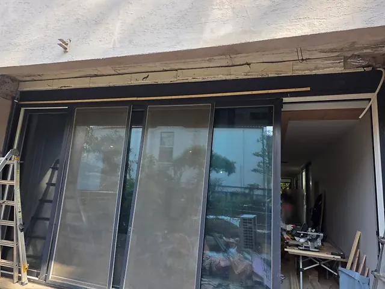

방화셔터 제조 · 1997년부터
사진이 증명하는
공장 직영 방화셔터
경기도 광주 자체 공장에서 만들고, 직영 LS셔터가 설치 · 수리 · 철거까지 직접 합니다. 다른 업체 사진을 빌려 쓰지 않는 실제 현장입니다.
KICT 2종방화셔터 품질인정
300여최근 3년 전국 현장
1997셔터 한 길
직영 현장 기록
최근 다녀온 현장
설치, 철거, 자재 납품까지. LS셔터 시공팀이 직접 찍은 사진입니다.
 신규 설치상가 매장 수동 알루미늄 셔터서울 성동구 마장동 · (W)3,250 × (H)2,500mm
철거움직이지 않는 투시형 셔터경기 성남 분당동
신규 설치상가 매장 수동 알루미늄 셔터서울 성동구 마장동 · (W)3,250 × (H)2,500mm
철거움직이지 않는 투시형 셔터경기 성남 분당동

철거 후상부 정리 완료(W)약 5,400 × (H)약 2,700mm 자재 납품슬랫 · T바 · 방화미미셔터 수리업체 납품 시공 중사다리 작업으로 슬랫 설치서울 성동구 마장동
시공 중사다리 작업으로 슬랫 설치서울 성동구 마장동